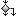

LISE
Direct link toward element page
Titles referencing the Element
 Part - Mission Stakeholders : Mission Stakeholders
Part - Mission Stakeholders : Mission Stakeholders SystemFunction - Data link
SystemFunction - Data link FunctionalExchange - Entertainment
FunctionalExchange - Entertainment- FunctionalExchange - Experimental data
- SystemFunction - Deliver LISE to target area
 FunctionInputPort - FIP 1
FunctionInputPort - FIP 1- Capella - Lunar Integrated Shelter for Exploration (LISE) - Capability Protect from environment
 OperationalCapability - Manage operations
OperationalCapability - Manage operations FunctionalExchange - Lunar dust
FunctionalExchange - Lunar dust- Capella - Lunar Integrated Shelter for Exploration (LISE) - SystemFunction Absorb heat
- SystemFunction - Sleep
 ExchangeCategory - Cmd
ExchangeCategory - Cmd- Capella - Lunar Integrated Shelter for Exploration (LISE) - SystemFunction Impose solar irradiance
 FunctionOutputPort - FOP 3
FunctionOutputPort - FOP 3- Capella - Lunar Integrated Shelter for Exploration (LISE) - FunctionOutputPort outPower
- ExchangeCategory - Environmental constraints
 Part - Ground segment : Ground segment
Part - Ground segment : Ground segment- FunctionalExchange - Utensils
 Part - LISE HMI : LISE HMI
Part - LISE HMI : LISE HMI OperationalActivity - Autonomous docking
OperationalActivity - Autonomous docking- SystemFunction - Eat meal
 Entity - Mission Stakeholders
Entity - Mission Stakeholders- Capella - Lunar Integrated Shelter for Exploration (LISE) - SystemFunction Maintainance
- Capella - Lunar Integrated Shelter for Exploration (LISE) - OperationalCapability Provide rover hosting capabilities
- FunctionInputPort - inSystems data
 LogicalComponent - LA 2
LogicalComponent - LA 2- FunctionalExchange - Sleeping quarter
 LogicalComponent - C&DH
LogicalComponent - C&DH- OperationalCapability - Enable human exploration of the moon
 Mission - Enhance scientific researh capabilities
Mission - Enhance scientific researh capabilities- Capella - Lunar Integrated Shelter for Exploration (LISE) - OperationalActivity Provide vacuum
- OperationalActivity - Root Operational Activity
 ComponentPort - CP 1
ComponentPort - CP 1 SystemComponent - Mission Stakeholders
SystemComponent - Mission Stakeholders- Capella - Lunar Integrated Shelter for Exploration (LISE) - OperationalActivity Charge batteries
 Capability - Provide nominal habitat
Capability - Provide nominal habitat- SystemFunction - Charge
 Mode - Deployment faillure
Mode - Deployment faillure- FunctionInputPort - inPerspiration
- Capella - Lunar Integrated Shelter for Exploration (LISE) - FunctionInputPort inBiological waste
- Capella - Lunar Integrated Shelter for Exploration (LISE) - SystemFunction Monitoring
- FunctionOutputPort - outWater
- FunctionInputPort - FIP 1
- Entity - NASA
- Capella - Lunar Integrated Shelter for Exploration (LISE) - OperationalActivity Provide solar irradiance
- FunctionalExchange - electrical power
 SystemComponent - LISE
SystemComponent - LISE- FunctionalExchange - Data
- SystemFunction - Clean
- Part - Broader scientific comunity : Broader scientific comunity
- LogicalComponent - High gain
- OperationalActivity - Excercise
- SystemFunction - Donning
- SystemFunction - Be worn
- LogicalComponent - TCS
- FunctionOutputPort - outPolluted air
- FunctionInputPort - inEVA procedures
 SystemFunction - Provide personal hygiene products
SystemFunction - Provide personal hygiene products- SystemFunction - Be stored
- FunctionalExchange - Biological waste
- Capella - Lunar Integrated Shelter for Exploration (LISE) - FunctionalExchange Power
- SystemFunction - Provide utensils
- SystemFunction - Provide water management
- FunctionalExchange - Scientific data
- SystemFunction - Perform LSV functions
- FunctionOutputPort - FOP 1
- FunctionInputPort - FIP 1
- Entity - Rover
- SystemFunction - Allow entry and exit
- FunctionalExchange - electrical power
- FunctionInputPort - inExcercise equipments
- SystemFunction - Perform lunar environment functions
- Entity - CNES
- SystemFunction - Generate waste
- OperationalActivity - Impose environmental conditions
- SystemFunction - Provide sleeping quarter
- OperationalCapability - Produce scientific data
 DataPkg - Data
DataPkg - Data- Mode - Degraded transition to unoccupied
- FunctionOutputPort - outSystems data
- DataPkg - Predefined Types
- LogicalComponent - OBC
- SystemFunction - Provide dust mitigation
- FunctionOutputPort - outPerspiration
- Capella - Lunar Integrated Shelter for Exploration (LISE) - FunctionInputPort inEVA procedures
- SystemFunction - Analyse scientific data
- FunctionalExchange - Polluted air
- Capability - Enable scientific research on the moon
- FunctionInputPort - FIP 1
- Part - Mechanical frame : Mechanical frame
- FunctionInputPort - FIP 2
- Capella - Lunar Integrated Shelter for Exploration (LISE) - FunctionInputPort FIP 1
- Part - Active TCS : Active TCS
- FunctionOutputPort - outUtensils
- OperationalActivity - Explore lunar surface [Rover]
- FunctionOutputPort - outooperation procedures
- FunctionInputPort - inArea to explore
- FunctionalExchange - Personal cleaning supplies
- FunctionInputPort - inAudio and video
- FunctionInputPort - incommand
- OperationalCapability - Provide habitable space for astronauts on the moon
- Entity - Mission crew
 LogicalFunction - Manage charging and discharging
LogicalFunction - Manage charging and discharging StateMachine - System State Machine
StateMachine - System State Machine- SystemFunction - Perform mission stakeholder functions
 FunctionalChain - Charge extrenal system
FunctionalChain - Charge extrenal system- FunctionalExchange - Heat
- FunctionInputPort - FIP 1
- FunctionalExchange - Dust
- SystemFunction - Monitor systems
- SystemFunction - Provide temporary environmental protection
- Part - High gain : High gain
- FunctionalExchange - Audi and video
- Capability - Produce scientific data
- Part - Astronaut : Astronaut
 ComponentPort - CP 1
ComponentPort - CP 1- FunctionalExchange - Breathable air
-  ChoicePseudoState - All systems OK?
- LogicalComponent - ECLSS
- FunctionalExchange - Water
- Capella - Lunar Integrated Shelter for Exploration (LISE) - SystemFunction Monitor systems
 Region - region
Region - region SystemFunction - Split 7
SystemFunction - Split 7- FunctionInputPort - FIP 1
- DataPkg - Data
 Part - LA 2 : LA 2
Part - LA 2 : LA 2- FunctionOutputPort - outAudio and video
- SystemFunction - Root System Function
- SystemFunction - Perform EVA
- FunctionOutputPort - FOP 1
 SystemAnalysis - System Analysis
SystemAnalysis - System Analysis- Capella - Lunar Integrated Shelter for Exploration (LISE) - SystemFunction Charge batteries
- SystemFunction - Select exploration area
- Capella - Lunar Integrated Shelter for Exploration (LISE) - ComponentPort CP 6
- Region - region
- FunctionInputPort - FIP 1
- LogicalComponent - Mechanism
- Region - region
- FunctionOutputPort - outAudi and video
- FunctionalExchange - Personal cleaning supplies
- OperationalActivity - Control remote systems
- FunctionalExchange - Biological waste
- ExchangeCategory - power
- FunctionInputPort - inExperiment plan
- FunctionalExchange - Albedo
- OperationalActivity - Generate waste
- Region - region
- FunctionalExchange - Sleeping quarter
- FunctionalExchange - ooperation procedures
- SystemFunction - Prepare meal
- Region - region
- Part - NASA : NASA
- SystemFunction - Collect external system data
- FunctionalExchange - Entertainment
 ComponentPort - CP 2
ComponentPort - CP 2- FunctionOutputPort - outEntertainment
- SystemFunction - Explore lunar surface
- SystemFunction - Sustain protected volume
 CapabilityPkg - Capabilities
CapabilityPkg - Capabilities- Mode - End of Life
- SystemFunction - Provide storage
- FunctionalExchange - Experiment plan
- FunctionInputPort - inWater
- OperationalActivity - Provide transportation
- FunctionInputPort - In : Current
- OperationalActivity - Provide in-situ ressources
- FunctionalExchange - Electrostatic charging
- SystemFunction - Host crew
- FunctionalExchange - Electrical power
- Part - Rover : Rover
- Region - region
- OperationalActivity - Perform experiment
- Region - region
- FunctionInputPort - inPolluted air
- Capella - Lunar Integrated Shelter for Exploration (LISE) - SystemFunction Provide dust environment
- Capella - Lunar Integrated Shelter for Exploration (LISE) - FunctionOutputPort FOP 1
- Part - ECLSS : ECLSS
- Capella - Lunar Integrated Shelter for Exploration (LISE) - SystemFunction Charge
- Capella - Lunar Integrated Shelter for Exploration (LISE) - FunctionalExchange dust
- Mode - Degraded occupied
- SystemComponent - Sapce suit
 SystemComponentPkg - Structure
SystemComponentPkg - Structure StringType - Char
StringType - Char- Mode - Nominal operations
- FunctionInputPort - inExperimental data
- FunctionalExchange - Toilet
- OperationalCapability - Enable scientific research on the moon
- LogicalComponent - Low gain
- OperationalActivity - Impose solar irradiance
- FunctionInputPort - FIP 1
- Mode - Deployment
- FunctionOutputPort - FOP 1
- SystemFunction - Control operations
- FunctionOutputPort - FOP 1
- LogicalComponent - Radiation protection
- FunctionInputPort - inSystems data
- FunctionOutputPort - FOP 1
- LogicalComponent - ISRU
- Capella - Lunar Integrated Shelter for Exploration (LISE) - SystemFunction Maintain operational conditions
- Part - EPS : EPS
- LogicalComponent - Solar arrays
 PhysicalFunctionPkg - Physical Functions
PhysicalFunctionPkg - Physical Functions- Capella - Lunar Integrated Shelter for Exploration (LISE) - SystemFunction Explore the lunar surface
- ExchangeCategory - Mission equipments
- FunctionalExchange - Electrical power
- OperationalCapability - Critical operations
- OperationalActivity - Define experiment
- SystemComponent - Astronaut
- FunctionalChain - Manage dust
- Capella - Lunar Integrated Shelter for Exploration (LISE) - SystemFunction Produce waste
- Part - Control Centre : Control Centre
- SystemFunction - Provide electrostatic environment
- OperationalActivity - Crew activities
- FunctionalExchange - waste
- OperationalActivity - Define operations
- Part - HLS : HLS
- LogicalComponent - Power management module
- Part - Low gain : Low gain
- FunctionOutputPort - outExperimental data
- LogicalComponent - EPS
- Capella - Lunar Integrated Shelter for Exploration (LISE) - FunctionInputPort inPower
- ComponentPort - CP 1
- OperationalActivity - Eat meal
- FunctionalExchange - Systems data
- SystemFunction - Maintenance
- FunctionalExchange - Space suit
- OperationalActivity - Impose lunar irradiance
- LogicalComponent - Passive TCS
- SystemFunction - Breathe
- SystemComponent - Lander
- FunctionOutputPort - FOP 2
- Capella - Lunar Integrated Shelter for Exploration (LISE) - SystemFunction Exit the shelter
- FunctionalExchange - Perspiration
- LogicalComponent - LISE HMI
- OperationalActivity - Generate distribute power
- Capella - Lunar Integrated Shelter for Exploration (LISE) - SystemFunction Provide solar irradiance
- FunctionInputPort - FIP 1
- DataPkg - Data
- OperationalCapability - Scientific operations
- FunctionOutputPort - outArea to explore
- Mode - Prepare for occupation
- Region - region
- SystemFunction - Impose vibration environment
- SystemFunction - Provide cleaning supplies
- Capella - Lunar Integrated Shelter for Exploration (LISE) - ComponentPort CP 3
- SystemFunction - Store data
- LogicalFunction - Produce elecrtical power
- Capella - Lunar Integrated Shelter for Exploration (LISE) - FunctionalExchange EVA procedures
- FunctionalExchange - Cleaning supplies
- FunctionalExchange - Area to explore
- LogicalComponent - Medical subsystem
- FunctionalExchange - comfirmation of deployment
- FunctionalExchange - Systems data
- SystemFunction - Define experiment
 PhysicalComponentPkg - Structure
PhysicalComponentPkg - Structure- ComponentPort - CP 1
- ComponentPort - CP 4
- FunctionalExchange - Audio and video
- FunctionalExchange - EVA procedures
- FunctionInputPort - inExperimental equipment
- SystemFunction - Use toilet
- FunctionalExchange - Audio and video
- SystemComponent - Lunar Surface vehicle
- Capella - Lunar Integrated Shelter for Exploration (LISE) - ComponentPort CP 5
- Part - Other Communication relay : Other Communication relay
- FunctionalExchange - Electrical current
- ExchangeCategory - Plan
- Capella - Lunar Integrated Shelter for Exploration (LISE) - SystemFunction Impose radiation environment
- SystemFunction - Perform experiment
- Capella - Lunar Integrated Shelter for Exploration (LISE) - FunctionInputPort inFood waste
- OperationalActivity - Provide electrostatic environment
- FunctionalExchange - Conditionned atmosphere
- ChoicePseudoState - Deactivation procedures OK?
- Part - Medical subsystem : Medical subsystem
 PhysicalFunction - Root Physical Function
PhysicalFunction - Root Physical Function- FunctionInputPort - inSleeping quarter
- Capella - Lunar Integrated Shelter for Exploration (LISE) - FunctionInputPort inPower
- FunctionOutputPort - FOP 1
- Entity - Lunar Surface
- Capability - Provide emergency shelter
- OperationalActivity - Analyse scientific data
- FunctionalExchange - EVA plan
 PhysicalComponent - Physical System
PhysicalComponent - Physical System- ComponentPort - CP 7
- Part - Communication means : Communication means
- LogicalFunction - Store electrical energy
 InterfacePkg - Interfaces
InterfacePkg - Interfaces- Mode - Lunar transfer
 RolePkg - Roles
RolePkg - Roles- FunctionInputPort - inSystems data
- FunctionInputPort - inPersonal cleaning supplies
- Part - Mechanism : Mechanism
- Capella - Lunar Integrated Shelter for Exploration (LISE) - SystemFunction Provide micrometeorites
- SystemFunction - Control atmosphere pressure
- Mode - Degraded operations
 TerminatePseudoState - Abort
TerminatePseudoState - Abort- SystemFunction - Take leisure break
- FunctionOutputPort - outEVA procedures
- Part - Mission crew : Mission crew
 NumericType - LongLong
NumericType - LongLong- LogicalComponent - Batteries
- DataPkg - Data
- Mode - Degraded unoccupied
- FunctionOutputPort - outSystems data
- OperationalActivity - EVA
- InterfacePkg - Interfaces
- OperationalActivity - Monitor systems [Crew]
- ComponentPort - CP 1
- OperationalActivity - Prepare meal
- OperationalCapability - Support remote communication
- FunctionOutputPort - Out : current
- FunctionalExchange - EVA plan
- FunctionalExchange - Systems data
- SystemFunction - Monitor systems
- ComponentPort - CP 1
- FunctionalExchange - Systems data
 DeepHistoryPseudoState - DeepHistory 5
DeepHistoryPseudoState - DeepHistory 5- LogicalFunction - Root Logical Function
- Part - Mission operations : Mission operations
- FunctionalExchange - excess heat
- Part - Airlock : Airlock
- FunctionInputPort - FIP 2
- Capella - Lunar Integrated Shelter for Exploration (LISE) - SystemFunction Transfer data
- Entity - Artemis Accords signatory states
- FunctionalExchange - waste
- Region - region
- FunctionInputPort - inEntertainment
- FunctionOutputPort - FOP 1
- FunctionOutputPort - FOP 1
- FunctionalExchange - Experiment plan
- OperationalActivity - Manage operations
- FunctionInputPort - inExperimental protocol
- NumericType - Float
- Capella - Lunar Integrated Shelter for Exploration (LISE) - OperationalActivity Explore the lunar surface
- Part - Artemis Accords signatory states : Artemis Accords signatory states
- SystemFunction - Provide micrometeorites
- Capella - Lunar Integrated Shelter for Exploration (LISE) - SystemFunction Impose vacuum
- FunctionInputPort - FIP 1
- FunctionOutputPort - outBiological waste
- FunctionalExchange - EVA plan
- Region - region
- OperationalActivity - Impose vibration environment
- SystemFunction - Provide terrain
- FunctionalExchange - Systems data
- SystemFunction - Provide toilet
- Capella - Lunar Integrated Shelter for Exploration (LISE) - FunctionalExchange dust
- Region - Default Region
- SystemFunction - Perform space suit functions
- InterfacePkg - Interfaces
- Entity - Ground segment
- LogicalFunction - Maintain O2
- LogicalComponent - Lander mounting deck
- FunctionOutputPort - FOP 1
- FunctionalExchange - Perspiration
- LogicalComponent - Waste management
- Part - C&DH : C&DH
- FunctionInputPort - inUtensils
- FunctionOutputPort - outCommand
- FunctionOutputPort - outSleeping quarter
- SystemFunction - Provide meteorite shielding
- OperationalActivity - Explore lunar surface [Crew]
- FunctionInputPort - inAudi and video
- LogicalFunction - Manage power distribution
- SystemFunction - Deliver mission crew
 SystemEngineering - Lunar Integrated Shelter for Exploration (LISE)
SystemEngineering - Lunar Integrated Shelter for Exploration (LISE)- FunctionalExchange - Command
- Capella - Lunar Integrated Shelter for Exploration (LISE) - FunctionOutputPort outAudi and video
 Part - Physical System : Physical System
Part - Physical System : Physical System- FunctionalExchange - Data
- SystemFunction - Perform LISE functions
- Entity - ESA
- OperationalActivity - Impose lunar gaseous environment
- FunctionalExchange - Command
- FunctionOutputPort - outPersonal cleaning supplies
- LogicalComponent - LISE
- Capella - Lunar Integrated Shelter for Exploration (LISE) - FunctionalExchange Power
- LogicalComponent - Active TCS
- FunctionalExchange - ooperation procedures
- Mode - Occupied
- FunctionInputPort - FIP 3
- OperationalActivity - Provide micrometeorites
- SystemFunction - Impose Lunar irradiance
- Part - Solar arrays : Solar arrays
- FunctionalExchange - External system data
- Part - Power management module : Power management module
- OperationalActivity - Deliver mission crew
- Capella - Lunar Integrated Shelter for Exploration (LISE) - FunctionInputPort FIP 1
- FunctionInputPort - FIP 1
- SystemFunction - provide cooling
- FunctionOutputPort - FOP 1
- SystemFunction - Deploy current generation system
- OperationalActivity - Charge LSV
- Mode - Prepare for inoccupation
- FunctionOutputPort - FOP 1
- Region - region
- NumericType - UnsignedInteger
- FunctionInputPort - inCleaning waste
- FunctionalExchange - Experimental data
- SystemFunction - Provide charging of external systems
- OperationalActivity - Drink
- ExchangeCategory - Waste
- OperationalActivity - Breathe
- Capella - Lunar Integrated Shelter for Exploration (LISE) - SystemFunction Generate distribute power
- StringType - String
- Part - Radiation protection : Radiation protection
- FunctionalExchange - Experimental protocol
- SystemFunction - Provide in-situ ressources
- Entity - HLS
- OperationalActivity - Communicate with outside systems
- NumericType - UnsignedLongLong
- SystemFunction - Communicate with control centre
 Scenario - [FS] Manage local operations
Scenario - [FS] Manage local operations- FunctionalExchange - Command
- FunctionOutputPort - FOP 1
- Capella - Lunar Integrated Shelter for Exploration (LISE) - Capability Provide breatheable atmosphere
- FunctionalExchange - Radiations
- SystemFunction - Excercise
- FunctionalExchange - Experimental equipment
- FunctionInputPort - FIP 1
- Capella - Lunar Integrated Shelter for Exploration (LISE) - ComponentPort CP 2
- FunctionalExchange - Excercise equipments
- FunctionalExchange - Utensils
- Capella - Lunar Integrated Shelter for Exploration (LISE) - FunctionalExchange Body heat
- Capella - Lunar Integrated Shelter for Exploration (LISE) - FunctionOutputPort FOP 1
- Part - Airlock HMI : Airlock HMI
 FinalState - End of mission
FinalState - End of mission- ComponentPort - CP 10
- FunctionalChain - Sustain environmental conditions
- SystemComponent - HLS
- FunctionInputPort - inBreathable air
- FunctionalExchange - command
- FunctionalExchange - Food waste
- FunctionOutputPort - FOP 1
- FunctionalExchange - EVA procedures
- FunctionalExchange - Thermal flux
- SystemFunction - Satisfy phisiological functions
- FunctionOutputPort - outBiological waste
- Part - Power generator : Power generator
 OperationalAnalysis - Operational Analysis
OperationalAnalysis - Operational Analysis- FunctionInputPort - FIP 1
- LogicalComponent - Airlock
- OperationalActivity - Communicate with mission crew
- FunctionInputPort - inwaste
- SystemComponent - Lunar environment
- OperationalActivity - Support research activities
- FunctionInputPort - FIP 1
- FunctionOutputPort - outScientific data
- SystemFunction - Provide radiaiton protection
- OperationalActivity - Host crew
- SystemFunction - Impose solar irradiance
- ComponentPort - CP 8
- Capella - Lunar Integrated Shelter for Exploration (LISE) - FunctionOutputPort outPower
- FunctionalExchange - Electrical current
- SystemFunction - Deliver payload
- OperationalActivity - Systems management
- Capella - Lunar Integrated Shelter for Exploration (LISE) - FunctionalExchange Heat
- NumericType - Double
- ComponentPort - CP 1
- SystemFunction - Dispose of watse
- FunctionOutputPort - outCleaning waste
- Region - region
- FunctionalExchange - Toilet
- Capella - Lunar Integrated Shelter for Exploration (LISE) - SystemFunction Enter the shelter
- FunctionalExchange - Audi and video
- FunctionalExchange - Food waste
- Part - Lunar environment : Lunar environment
- Part - Lunar Surface : Lunar Surface
- SystemFunction - Pressurise protected volume
- FunctionInputPort - inEVA plan
- FunctionInputPort - FIP 1
- SystemFunction - Impose lunar gaseous environment
- FunctionalExchange - Command
- FunctionalExchange - Electrical current
- NumericType - Short
- SystemFunction - Control systems
- Capella - Lunar Integrated Shelter for Exploration (LISE) - FunctionOutputPort FOP 2
- Part - Batteries : Batteries
- FunctionOutputPort - outExperiment plan
- SystemFunction - Provide transportation
- SystemComponent - Other Communication relay
 ComponentExchangeCategory - Power interface
ComponentExchangeCategory - Power interface CapabilityRealizationPkg - Capabilities
CapabilityRealizationPkg - Capabilities- ExchangeCategory - Consummables
- FunctionInputPort - FIP 1
- Capella - Lunar Integrated Shelter for Exploration (LISE) - OperationalCapability Provide pressurised storage capacity
- FunctionalExchange - Polluted air
- FunctionInputPort - inAudi and video
- OperationalActivity - Doffing
- FunctionOutputPort - outToilet
- OperationalCapability - Increase exploration area
- Capella - Lunar Integrated Shelter for Exploration (LISE) - SystemFunction Provide waste management
- Capella - Lunar Integrated Shelter for Exploration (LISE) - FunctionalExchange electricl power
- Part - Lunar surface vehicle : Lunar surface vehicle
- Capella - Lunar Integrated Shelter for Exploration (LISE) - FunctionOutputPort FOP 1
- Part - Sapce suit : Sapce suit
- SystemFunction - Provide tilt
- Entity - Mission equipment
- FunctionOutputPort - outExperimental protocol
- Capella - Lunar Integrated Shelter for Exploration (LISE) - FunctionOutputPort FOP 1
- FunctionalExchange - Systems data
 Project - Lunar Integrated Shelter for Exploration (LISE)
Project - Lunar Integrated Shelter for Exploration (LISE)- NumericType - Byte
- Capella - Lunar Integrated Shelter for Exploration (LISE) - SystemFunction Send command
- OperationalActivity - Provide day-to-day ressources
- Entity - Mission Control Centre
 OperationalCapabilityPkg - Operational Capabilities
OperationalCapabilityPkg - Operational Capabilities- Region - region
- Capability - Manage local operations
- Mode - Degraded transition to occupied
- NumericType - Integer
- SystemFunction - Perform communication relay function
- FunctionInputPort - FIP 1
- FunctionOutputPort - FOP 1
- FunctionInputPort - FIP 1
- SystemFunction - Check systems status
- Region - region
- FunctionInputPort - FIP 1
- FunctionInputPort - FIP 1
 LogicalComponentPkg - Structure
LogicalComponentPkg - Structure- FunctionInputPort - inIncreased range
- FunctionOutputPort - FOP 1
- LogicalComponent - Deployable Structure
- Capella - Lunar Integrated Shelter for Exploration (LISE) - SystemFunction Provide electrostatic environment
- FunctionalExchange - EVA procedures
- FunctionalExchange - access device
- Region - region
- Capella - Lunar Integrated Shelter for Exploration (LISE) - SystemFunction Explore
- Entity - Mission operations
- Capella - Lunar Integrated Shelter for Exploration (LISE) - FunctionOutputPort outEVA plan
- SystemFunction - Communicate
- Capella - Lunar Integrated Shelter for Exploration (LISE) - SystemFunction Gather dust
- Part - OBC : OBC
- OperationalActivity - support communication
- FunctionalExchange - command
- FunctionalExchange - Temperature
- SystemFunction - Provide dust environment
- Capella - Lunar Integrated Shelter for Exploration (LISE) - FunctionalExchange location
- FunctionalExchange - EVA plan
- FunctionInputPort - inToilet
- Part - TCS : TCS
- FunctionOutputPort - FOP 1
- OperationalActivity - Impose radiation environment
 SystemFunctionPkg - System Functions
SystemFunctionPkg - System Functions- FunctionInputPort - FIP 1
- OperationalActivity - Impose thermal cycling
- SystemFunction - Perform rover functions
- ComponentPort - CP 9
- ComponentPort - CP 1
- FunctionInputPort - FIP 1
- Capella - Lunar Integrated Shelter for Exploration (LISE) - SystemFunction Charge
- FunctionalExchange - Systems data
- Region - region
- SystemFunction - Provide water
- Capella - Lunar Integrated Shelter for Exploration (LISE) - SystemFunction Provide vacuum
- SystemComponent - Rover
- Capella - Lunar Integrated Shelter for Exploration (LISE) - FunctionInputPort FIP 1
- Capella - Lunar Integrated Shelter for Exploration (LISE) - SystemFunction Autonomous docking
- SystemFunction - Charge batteries
- SystemFunction - Deploy protected volume
 LogicalFunctionPkg - Logical Functions
LogicalFunctionPkg - Logical Functions- LogicalComponent - Atmosphere management
- SystemFunction - Provide nutrition
- Capella - Lunar Integrated Shelter for Exploration (LISE) - SystemFunction Impose lunar irradiance
- NumericType - Hexadecimal
- Capella - Lunar Integrated Shelter for Exploration (LISE) - OperationalActivity Survive the lunar night
- SystemFunction - Control temperature
- Part - ESA : ESA
- SystemFunction - Manage operations
- FunctionalExchange - Water
- SystemFunction - Manage systems
- Capella - Lunar Integrated Shelter for Exploration (LISE) - Capability Analyse scientific data
- Capella - Lunar Integrated Shelter for Exploration (LISE) - SystemFunction Impose vibration environment
- Capella - Lunar Integrated Shelter for Exploration (LISE) - FunctionInputPort FIP 2
- FunctionalExchange - Meteorites
- FunctionInputPort - FIP 1
- FunctionalExchange - Increased range
- Mode - Restoration
- FunctionOutputPort - FOP 1
- OperationalActivity - Crew physiological needs
- SystemFunction - Gather physiological data
- FunctionalExchange - Command
- FunctionInputPort - inBiological waste
- SystemFunction - Personal hygiene
- ComponentPort - CP 4
- OperationalActivity - Personal hygiene
- FunctionOutputPort - FOP 1
- FunctionInputPort - FIP 1
 LogicalArchitecture - Logical Architecture
LogicalArchitecture - Logical Architecture- Capability - Provide habitable shelter
- Entity - Broader scientific comunity
- OperationalCapability - Maintenance operations
- Capella - Lunar Integrated Shelter for Exploration (LISE) - FunctionalExchange Location
- FunctionalExchange - Data
- FunctionalExchange - Breathable air
- Entity - Communication means
- Entity - Power generator
- Part - Space segment : Space segment
- OperationalActivity - Impose vacuum
- Capella - Lunar Integrated Shelter for Exploration (LISE) - SystemFunction Impose thermal cycling
- FunctionalExchange - Food
- Mode - Error
- FunctionOutputPort - FOP 1
- Part - Mission Stakeholders : Mission Stakeholders
- FunctionalExchange - Command
- FunctionalExchange - command
- Capella - Lunar Integrated Shelter for Exploration (LISE) - FunctionalExchange Mission data
- Part - Waste management : Waste management
- CapabilityRealizationPkg - Capabilities
- FunctionOutputPort - outBreathable air
- Capella - Lunar Integrated Shelter for Exploration (LISE) - Capability Enable reuse
- SystemFunction - Provide day-to-day ressources
- FunctionOutputPort - FOP 1
- FunctionInputPort - In : current
- OperationalCapability - Analyse scientific data
- SystemComponent - Control Centre
- ExchangeCategory - Data
- ComponentPort - CP 3
- SystemFunction - Gather dust
- Region - region
- FunctionOutputPort - outExcercise equipments
- FunctionalExchange - Cleaning supplies
- OperationalActivity - Maintenance
- FunctionalExchange - Biological waste
- Mode - Pre-flight
- SystemFunction - Autonomous docking
- Region - region
- FunctionInputPort - inFood waste
- FunctionalExchange - Food to eat
- OperationalActivity - Dispose of watse
- Part - Water management : Water management
- SystemFunction - Deploy access device
- SystemFunction - Provide breatheable air
- FunctionOutputPort - outAudi and video
- Capella - Lunar Integrated Shelter for Exploration (LISE) - FunctionInputPort FIP 1
- FunctionOutputPort - FOP 1
- FunctionalExchange - Power
- FunctionalExchange - Audi and video
- OperationalActivity - Sleep
- SystemFunction - provide heating
- FunctionalExchange - Space suit
- FunctionalExchange - Increased range
- OperationalActivity - Use toilet
- Region - region
- Capella - Lunar Integrated Shelter for Exploration (LISE) - FunctionInputPort FIP 1
- Part - CNES : CNES
- OperationalActivity - Clean
- OperationalActivity - Deliver payload
- SystemFunction - Support research activities
- SystemFunction - Perform HLS functions
- Part - Lunar Surface vehicle : Lunar Surface vehicle
- FunctionOutputPort - FOP 1
- FunctionOutputPort - FOP 1
- FunctionOutputPort - outIncreased range
- Part - Deployable Structure : Deployable Structure
- FunctionalExchange - Vacuum pressure
- SystemFunction - Drink
- SystemFunction - Annonce position
- Part - Mission equipment : Mission equipment
- SystemFunction - Perform crew functions
- FunctionalExchange - Audio and video
- FunctionOutputPort - outFood
- SystemFunction - Mitigate electrostatic charging
- FunctionInputPort - FIP 1
- FunctionalExchange - Food waste
- Capella - Lunar Integrated Shelter for Exploration (LISE) - OperationalActivity Provide dust
- Part - HLS : HLS
- NumericType - UnsignedShort
- FunctionOutputPort - outwaste
- OperationalActivity - Donning
- FunctionalExchange - Experimental equipment
- SystemFunction - Preform crew activities
- OperationalActivity - Charge rover
- FunctionOutputPort - outEVA plan
- FunctionOutputPort - FOP 1
- FunctionalExchange - Audi and video
- SystemFunction - Doffing
- Capella - Lunar Integrated Shelter for Exploration (LISE) - SystemFunction Provide dust
- SystemFunction - Perform lander functions
- SystemFunction - Impose environmental conditions
- SystemFunction - Handle external commands
- LogicalComponent - Mechanical frame
- Entity - Space segment
- Capella - Lunar Integrated Shelter for Exploration (LISE) - FunctionOutputPort FOP 1
- ComponentPort - CP 1
- SystemFunction - Define operations
- InterfacePkg - Interfaces
- FunctionInputPort - inEVA plan
- LogicalFunction - Control operation
- OperationalActivity - Provide terrain
- Capella - Lunar Integrated Shelter for Exploration (LISE) - FunctionOutputPort FOP 1
- Mode - Unoccupied
 InitialPseudoState - Initial 1
InitialPseudoState - Initial 1- Mode - Launch
- FunctionOutputPort - outcommand
- Capella - Lunar Integrated Shelter for Exploration (LISE) - FunctionInputPort inAudi and video
- SystemFunction - Provide excercise equipment
- Part - Mission Control Centre : Mission Control Centre
- LogicalComponent - Water management
- FunctionalExchange - Cleaning waste
 MissionPkg - Missions
MissionPkg - Missions- Part - Comms : Comms
- Part - ISRU : ISRU
- Capella - Lunar Integrated Shelter for Exploration (LISE) - OperationalActivity Maintain rover temperature
- FunctionOutputPort - outCleaning supplies
- Capella - Lunar Integrated Shelter for Exploration (LISE) - SystemFunction Mitigate dust deposition
- SystemFunction - Communicate
- FunctionalExchange - Power
- FunctionalChain - Manage external system data data
- SystemFunction - Produce, store and distribute power
- OperationalActivity - Monitor systems [MCC]
- SystemFunction - Impose radiation environment
- NumericType - UnsignedLong
- Capella - Lunar Integrated Shelter for Exploration (LISE) - FunctionOutputPort outSystems data
- FunctionOutputPort - FOP 1
- FunctionalExchange - Food
- FunctionInputPort - FIP 2
 OperationalActivityPkg - Operational Activities
OperationalActivityPkg - Operational Activities Part - LISE : LISE
Part - LISE : LISE- Part - Lander : Lander
- Mode - Landing
- Capella - Lunar Integrated Shelter for Exploration (LISE) - FunctionOutputPort outEVA procedures
 PhysicalArchitecture - Physical Architecture
PhysicalArchitecture - Physical Architecture- Capella - Lunar Integrated Shelter for Exploration (LISE) - JoinPseudoState Join 17
- SystemFunction - Communicate with mission crew
- Part - Rover : Rover
- FunctionOutputPort - outExperimental equipment
- SystemFunction - Provide entertainment
- LogicalComponent - Comms
- Mission - Increase exploration range of astronauts
- LogicalComponent - Airlock HMI
- FunctionalExchange - Scientific data
- SystemFunction - Explore lunar surface
- SystemFunction - Impose vacuum
- FunctionalExchange - Audio and video
- Part - Atmosphere management : Atmosphere management
- FunctionalExchange - Biological waste
- FunctionOutputPort - FOP 1
- OperationalActivity - Define procedures
- FunctionalExchange - Sunlight
- FunctionOutputPort - outFood waste
- Capella - Lunar Integrated Shelter for Exploration (LISE) - SystemFunction Impose lunar gaseous environment
 EntityPkg - Operational Entities
EntityPkg - Operational Entities BooleanType - Boolean
BooleanType - Boolean- FunctionalExchange - Area to explore
- Capella - Lunar Integrated Shelter for Exploration (LISE) - SystemFunction Remove lunar dust of external systems
- FunctionInputPort - inCleaning supplies
- FunctionalExchange - Cleaning waste
- Part - LISE : LISE
- SystemFunction - Perfprm MCC functions
- Capella - Lunar Integrated Shelter for Exploration (LISE) - OperationalActivity Absorb heat
- FunctionalExchange - Experimental protocol
- SystemFunction - Control atmosphere composition
- NumericType - Long
- FunctionalExchange - Excercise equipments
- FunctionInputPort - inCommand
- OperationalActivity - Provide dust environment
- FunctionInputPort - inScientific data
- Part - Passive TCS : Passive TCS
- FunctionInputPort - FIP 3
- Entity - Lunar surface vehicle
- FunctionInputPort - inooperation procedures
- FunctionInputPort - inFood
- OperationalActivity - Leisure
- SystemFunction - Impose thermal cycling
- FunctionOutputPort - outFood waste
- OperationalActivity - Select exploration area
- SystemFunction - Display system status
- SystemFunction - Define procedures
- FunctionalExchange - Space suit
- Part - Lander mounting deck : Lander mounting deck
Paragraphs referencing the Element
- SystemEngineering - Lunar Integrated Shelter for Exploration (LISE)
- Part - Physical System : Physical System
- Part - Solar arrays : Solar arrays
- Part - Power management module : Power management module
- Part - Radiation protection : Radiation protection
- SystemFunction - Provide in-situ ressources
- Part - Airlock HMI : Airlock HMI
- Part - Power generator : Power generator
- Part - Lunar environment : Lunar environment
- Part - Lunar Surface : Lunar Surface
- Part - Batteries : Batteries
- Part - Lunar surface vehicle : Lunar surface vehicle
- Part - Sapce suit : Sapce suit
- Part - OBC : OBC
- Part - TCS : TCS
- Part - ESA : ESA
- Part - Space segment : Space segment
- Part - Mission Stakeholders : Mission Stakeholders
- Part - Waste management : Waste management
- Part - Water management : Water management
- Part - CNES : CNES
- Part - Lunar Surface vehicle : Lunar Surface vehicle
- Part - Deployable Structure : Deployable Structure
- Part - Mission equipment : Mission equipment
- Part - HLS : HLS
- Part - Mission Control Centre : Mission Control Centre
- Part - Comms : Comms
- Part - ISRU : ISRU
- Part - LISE : LISE
- Part - Lander : Lander
- Part - Rover : Rover
- Part - Atmosphere management : Atmosphere management
- Part - LISE : LISE
- Part - Passive TCS : Passive TCS
- Part - Lander mounting deck : Lander mounting deck
Lists referencing the Element
Tables referencing the Element
- SystemFunction - Perfprm MCC functions
- SystemFunction - Control atmosphere composition
- FunctionInputPort - inCommand
- FunctionInputPort - inScientific data
- FunctionInputPort - FIP 3
- FunctionInputPort - inooperation procedures
- FunctionInputPort - inFood
- OperationalActivity - Leisure
- SystemFunction - Impose thermal cycling
- FunctionOutputPort - outFood waste
- OperationalActivity - Select exploration area
- SystemFunction - Display system status
- SystemFunction - Define procedures